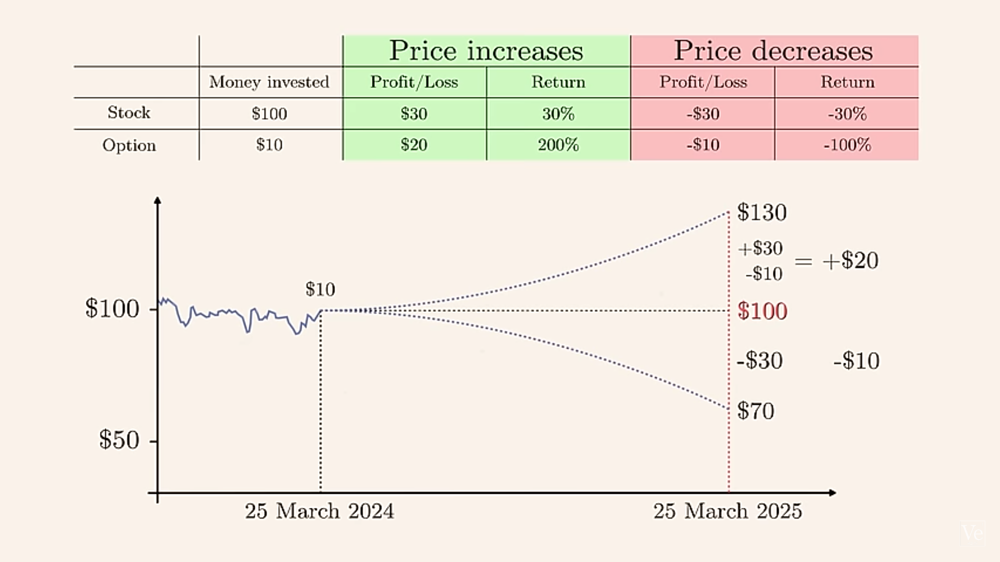
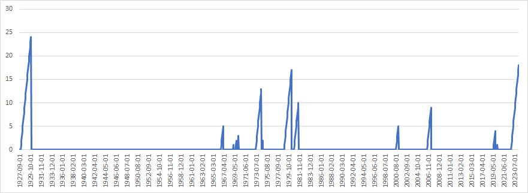

Glossary
Amortization - Similar to depreciation except for intangible assets. A non-cash expense that reduces the value of a company’s definite life intangible assets and also reduces reported earnings
Arbitrage - The simultaneous buying and selling of an asset in different markets to profit from any price differences (source)
- When markets are temporarily inefficient, arbitrageurs step in to correct these discrepancies by buying low in one market and selling high in another, thus making a profit and helping restore equilibrium.
- Markets are tied together by arbitrage—if one of them moves sharply in a given direction then others must follow.
- Example: Electoral Prediction Markets (source)
- If the Trump contract is trading at 60¢ on one market and 50¢ on another, one can bet against him on the first for 40¢ and against his opponent on the second for 50¢, thus buying a dollar for 90¢
- Each contract pays $1 (or $0 if you lose). So since you’ve purchased both possible outcomes for less than $1, you’re guaranteed to make a profit.
- If many try to exploit this opportunity at scale, the price of the Trump contract will fall on the first market and rise on the second, until prices have converged enough to make the trade unappealing
- If the Trump contract is trading at 60¢ on one market and 50¢ on another, one can bet against him on the first for 40¢ and against his opponent on the second for 50¢, thus buying a dollar for 90¢
Basis Point - 1/100th of a percentage point
Basis Risk - The risk that an asset and a hedge will not move in opposite directions as expected; “basis” refers to the discrepancy.
Bear Market - Definitions one and two by themselves can result in bear markets that are only a couple days long, which depending on your research, may not be useful.
- Index (Closing Price) under its 200-day moving average
- Index is 20% or more off its all-time high
- Defs 1 and 2 are the Bear Signals. Then, a bear market requires: (source)
- The Bear Signal has been true for 50% or more days over the last 63 trading days
- The last Bear Signal happened in the last 10 trading days
Beta - A measure of a stock’s or a portfolio’s sensitivity to market movements. It quantifies the relationship between the price movements of a security and the overall market.
- Used to evaluate the return of an asset based on, for example, the return of the market portfolio (Capital Asset Pricing Model, CAPM), market plus asset characteristics (Fama-French three-factor model and five-factor model, Carhart four-factor model, or a set of risk factors and market indices (Arbitrage Pricing Theory, APT).
- A beta of 1 indicates that the security tends to move in line with the market, while a beta greater than 1 implies that the security is more volatile than the market. A beta less than 1 suggests that the security is less volatile than the market. Often used as a tool to assess the risk or volatility of a particular stock or portfolio in comparison to the overall market
- Simple regressions are the basic model for estimating \(\beta\), such as \(\text{asset} = \alpha + \hat \beta \; \text{hedging\_intrument} + \epsilon\)
- For multiple hedging instruments, a simple regression model is fit for each instrument
- \(\text{asset}\): The historical return prices of the target asset
- Typical window of past prices is between 3 months and a year.
- \(\text{hedging instrument}\): The historical return prices of hedging instrument
- Example: Using ETF shares as a hedging instrument
- Target asset: 1000 shares of Stock A, price $100
- $50 per ETF share
- The beta is calculated to be 0.3
- To hedge, you’d buy 0.3 * ($100/$50) * 1000 shares = 600 ETF shares
- $100/$50 (prices of asset and instrument) standardizes beta coefficient
Bid-Ask Spread - The difference between the highest price a buyer is willing to pay (bid) and the lowest price a seller is willing to accept (ask).
- Lower spreads are preferred since the spread represents a cost for traders. When you buy at the ask price and sell at the bid price, you’re effectively paying the spread.
- Higher trading volume leads to narrower bid-ask spreads. Market makers can afford tighter spreads due to:
- Lower inventory risk (easier to balance buy and sell orders)
- Faster inventory turnover
- More frequent small profits instead of fewer large profits
- More competition which typically results in tighter spreads as market makers compete for order flow.
- Spreads often follow a U-shaped pattern during the trading day. Spreads are typically wider at market open and close (often lower volume periods) and narrower during mid-day (usually higher volume).
- Traders often use the bid-ask spread as a proxy for liquidity. Tighter spreads in high-volume markets generally indicate better liquidity conditions.
- For most retail investors, data on sites, like yahoo finance, might be delayed by 15-20 minutes unless you have a real-time data subscription.
- Example
- On Yahoo Finance, NIKE, Inc. (NKE) shows a Bid Price of $82.52 x 900 and an Ask Price of $82.60 x 800.
- Bid Price:
- 82.52 is the highest price that buyers are currently willing to pay for the stock.
- i.e. If you placed a market order to sell, you’d likely receive $82.52
- 900 represents the number of shares that buyers are willing to purchase at this price.
- 82.52 is the highest price that buyers are currently willing to pay for the stock.
- Ask Price:
- 82.60 is the lowest price at which sellers are willing to sell the stock.
- i.e. If you were to place a market order to buy, you’d likely pay $82.60
- 800 represents the number of shares available for sale at this price.
- 82.60 is the lowest price at which sellers are willing to sell the stock.
- Bid-Ask Spread: $82.60 - $82.52 = $0.08.
Bottom-Line Growth - (Refers to location on the income statement) Growth of a company’s net income. Growth can be accomplished increasing top-line metrics (e.g. revenue) or increases in investment income, interest income, rental or co-location fees collected, and the sale of property or equipment. Reductions in costs also increase the bottom-line, such as using different input goods or with more efficient methods; decreasing wages and benefits; operating out of less expensive facilities; utilizing tax benefits; and limiting the cost of capital.
Calmar Ratio (CR) - A financial metric used to assess the performance of an investment or trading strategy over a specific period. It’s used to evaluate the risk-adjusted return of an investment, where a higher Calmar Ratio indicates a more favorable risk-reward profile.
\[ \text{CR} = \frac{\text{CAGR}}{\text{Maximum Drawdown}} \]
Capital Expenditure (CapEx) - Money that is spent to acquire, repair, update, or improve a fixed company asset, such as a building, business, or equipment. For assets to fall under the CapEx designation, the investments must have a useful life of one year or more. A CapEx is amortized, or its value is deducted a little each year based on the total cost and its expected useful life.
- Useful life refers to the estimated and generally agreed upon shelf life of a specific business asset.
- According the IRS, Car’s useful life is 5yrs and new building’s is 39yrs
- Also see What Is a Capital Expenditure (CapEx)? Definition and Guide (example, calculations, relation to operating expenditure (OpEx)
- Useful life refers to the estimated and generally agreed upon shelf life of a specific business asset.
Cash Flow - The net balance of cash moving into (positive) and out (negative) of a business at a specific point in time. Cash flow is not profit. A negative profit means expenses > revenue while a negative cashflow could mean an investment > return in a project. (link)
- Operating cash flow: This refers to the net cash generated from a company’s normal business operations. In actively growing and expanding companies, positive cash flow is required to maintain business growth.
- Investing cash flow: This refers to the net cash generated from a company’s investment-related activities, such as investments in securities, the purchase of physical assets like equipment or property, or the sale of assets. In healthy companies that are actively investing in their businesses, this number will often be in the negative.
- Financing cash flow: This refers specifically to how cash moves between a company and its investors, owners, or creditors. It’s the net cash generated to finance the company and may include debt, equity, and dividend payments.
- Free cash flow: The net amount of cash left over after taxes are paid; depreciation, amortization, and changes in working capital are accounted for; and capital expenditures (property, equipment, and technology investments) are subtracted. In short: It’s the cash left over that doesn’t need to be allocated anywhere.
Commody Trend Advisors (CTAs) (aka Trend-Following Funds, Managed Futures) - Trade on futures contracts based on other market patterns.
- They go long on the markets that are going up and short the markets that are going down, but they differ in the asset classes or timelines they might invest in or how much leverage they use.
Compound Annual Growth Rate (CAGR) - The rate of return (RoR) that would be required for an investment to grow from its beginning value (BV) to its ending value (EV), assuming the profits were reinvested at the end of each period of the investment’s life span (t).
\[ \text{CAGR} = \left ( \left (\frac{\text{EV}}{\text{BV}} \right ) ^{1/t} - 1 \right) \times 100 \]
- Ignores Time Value of Money.
Cost of Carry or Carrying Charge - The cost of holding a security or a physical commodity over a period of time. The carrying charge includes insurance, storage and interest on the invested funds as well as other incidental costs
- For a stock, it’s is the opportunity cost of the capital that goes into it plus the risk you take on for holding it (this is what the idea of risk neutral valuation is based on).
Cost of Goods Sold (COGS) or Cost of Sales - Direct costs of producing the goods sold by a company. This amount includes the cost of the materials and labor directly used to create the good. It excludes indirect expenses, such as distribution costs and sales force costs.
Coupon - Bonds pay a set return each year, called a coupon, over a set period ending on a maturity date. The amound of the coupon depends on the interest rate that was determined when the bond was issued.
Cross-Market Validation - Perhaps you build distinct strategies for gold, and a different strategy for silver, because you believe they ‘behave differently’, and that might be true in some cases. On the other hand, if a system works on more than one product or market, it is generating evidence that it is universally robust.
Days Sales Outstanding (DSO) - An accounting metric that measures how long it takes a company to collect payment for goods and services purchased on credit. DSO can also represent the average number of days it takes credit sales to be converted into cash. Lower is better.
\[ \text{DSO Ratio} = \frac{\text{AR}}{\text{Sales}} \times 365 \]
- \(AR\) is accounts receivable.
Depreciation - A non-cash expense that approximates the reduction of the book value of a company’s long-term fixed assets or property, plant, and equipment (PP&E) over an estimated useful life (i.e. amount of time where the asset is expected to contribute to company operations) and reduces reported earnings. (see CAPEX for details on Useful Life)
- Straight-Line Depreciation assumes a constant depreciation expense over the estimated useful life of the asset
- Accelerated Depreciation assumes the asset loses most of its value in the early years of its life.
- If two equal companies are using the same depreciation method but have different useful life lengths, then the company with the shorter useful life on its equipment will have a lower EBIT multiple. So, it’s an apples to oranges comparison if your using multiples.
Derivatives - Securities that move in correspondence to one or more underlying assets. They include options, swaps, futures and forward contracts. The underlying assets can be stocks, bonds, commodities, currencies, indices or interest rates. Derivatives can be effective hedges against their underlying assets, since the relationship between the two is more or less clearly defined (if they’re negatively correlated? Or maybe if the underlying asset goes down, there’s a lag between the asset going down and the derivative going down. Therefore, you can sell the derivative before it goes down. Thus, hedging your risk). Knowing the value of an underlying asset helps traders determine the appropriate action (buy, sell, or hold) with their derivative.
Discount Rate - Represents a minimum rate of return acceptable to the investor, generally considered to be the investor’s cost of capital.
- For stock dividend valuation (video), the discount rate, \(k = \text{90-day T-Bill Rate} + (\text{Stock Beta} \times \text{Stock Market Risk Premium})\)
- \(\text{Stock Market Risk Premium}\) might be the equity risk premium which is the expected return on stocks - risk free rate (e.g. S&P average return rate - 10yr treasury bill rate)
- For project valuation, see Finance, Valuation
- For stock dividend valuation (video), the discount rate, \(k = \text{90-day T-Bill Rate} + (\text{Stock Beta} \times \text{Stock Market Risk Premium})\)
Discounted Cash Flow - Takes the earnings of an investment and discounts each of the cash flows based on a discount rate. The goal of a DCF model is to buy a stream of cashflows (i.e. via a stock) for less than they are worth. It values the cash flows of a company and determines whether they are over or under-valued via the stock price.
Drawdown - A peak-to-trough decline during a specific period for an investment, trading account, or fund. If a trading account has $10,000 in it, and the funds drop to $9,000 before moving back above $10,000, then the trading account witnessed a 10% drawdown.
- The larger the drawdown (%), the larger uptick (%) needed to get back to initial peak. (e.g. dd of 1% requires 1.01% uptick while 20% dd requires a 25% uptick). Some investors choose to avoid drawdowns of greater than 20% before cutting their losses and turning the position into cash instead.
- Guidelines
- A 20% maximum drawdown as a common threshold for long-term investment strategies.
- Conservative strategies: 5-10% maximum drawdown
- Moderate strategies: 10-20% maximum drawdown
- Aggressive strategies: 20-30% maximum drawdown or more
- A maximum drawdown should be no worse than 1.5 times that of the S&P 500 over the same period
- The potential reward should be at least 2-3 times the maximum drawdown risk
- Recovery time should not exceed twice the length of the drawdown period
- A 20% maximum drawdown as a common threshold for long-term investment strategies.
Earnings or Net Income - Represents after-tax profit. Typically the bottom line of the income statement. EBIT and EBITDA are better for comparing companies.\(\text{Earnings} = \text{Revenue} - \text{Expenses} - \text{Interest} - \text{Taxes}\)
Earnings Before Interest and Taxes (EBIT) - (aka Operating Income, Operating Profit) Common method for measuring profitability. \(\text{EBIT} = \text{Operating Expenses} - \text{Sales Revenue}\) where the sales revenue excludes tax and interest. Located in the company’s income statement. (Also see Profit)
Earnings Before Interest Tax Depreciation Amortization (EBITDA) - Metric used to analyze and compare pre-tax cash flow of a business. It eliminates non-cash factors (depreciation and amortization) and backs out financing costs (interest). Using net profit (aka earnings) would not be an apples-to-apples comparison. Preferred over EBIT in industries with a high level of fixed assets.
Adjusted EBITDA - Normalizes expenses by adding back any personal and non-business related expenses by owners who include these for tax purposes and isn’t truly a business cost. Used when selling a business.
Sellers Discretionary Earnings - Alternative to Adjusted EBITDA (Video). Adjusted EBITDA more commonly used.
Effective Tax Rate: An average rate of tax payable. Useful to compare individuals or corporations. \(\text{Tax Rate}_{\text{eff}} = \text{Tax Payed} / \text{Pre-Tax Earnings}\) As of 2022, the average (nonfinancial) S&P 500 corporate effective tax rate was around 19%. Contrast with Marginal Tax Rate.
Exchange Traded Fund (ETF) - A mutual fund that may be traded daily like a stock or bond.
Expenditure - A payment or the incurrence of a liability in exchange for goods or services. Evidence of the documentation triggered by an expenditure is a sales receipt or an invoice. (link, link)
- The key difference between an expense and an expenditure is that an expense recognizes the consumption of a cost, while an expenditure represents the disbursement of funds. An expense is usually recognized when a related sale is recognized or when the item in question has no future utility. An expenditure is usually recognized either when cash is paid out or a liability is incurred. (Also see Expense for an example)
- My idea is that an expenditure is something coming into the company. It’s the payment for something tangible that is used by the company for a period of time. Although, expenditures can also be a payment to reduce the outstanding balance of a loan, and a payment to distribute dividends to shareholders (¯\_(ツ)_/¯).
Expense - The reduction in value of an asset as it is used to generate revenue. If the underlying asset is to be used over a long period of time, the expense takes the form of depreciation, and is charged ratably over the useful life of the asset. If the expense is for an immediately consumed item, such as a salary. (link, link)
- My idea of an expense is something that’s leaving a company. It occurs immediately as an asset gets used or sold. When something dissipates, I think of an expense (e.g value of an asset disappearing as depreciation, electricity being used in the building, salary being paid).
- Example: An organization makes an expenditure of $3,000 for a desktop computer. It then charges the computer to expense over the next three years, which results in an annual depreciation expense of $1,000.
Expense Ratio - How much you pay a mutual fund or ETF per year, expressed as a percent of your investments. So, if you have $5,000 invested in an ETF with an expense ratio of .04%, you’ll pay the fund $2 annually.
False Strategy Theorem - Gives the threshold for which a Sharpe Ratio greater than this threshold would be significant.
- Given a sample of estimated performance statistics (e.g. sharpe ratios), \({S_k}\) for k = 1, …, K, where each S ∈ N(0, 1) \[
\mathbb{E}[\max_{k} {S_k}] \approx (1-\gamma) Z^{-1} \left[1-\frac{1}{K} \right] + \gamma Z^{-1} \left[{1 - \frac{1}{Ke}}\right]
\]
- \(Z^{-1}\) is the inverse of the standard Gaussian cdf
- \(e\) is the exponential constant (i.e. 2.71…)
- \(\gamma\) is the Euler-Mascheroni constant (approx. 0.5772156649…)
- Useful for backtesting multiple strategies and deciding whether the strategy with the maximum sharpe ratio is significant (mitigates multiple testing bias)
- Given a sample of estimated performance statistics (e.g. sharpe ratios), \({S_k}\) for k = 1, …, K, where each S ∈ N(0, 1) \[
\mathbb{E}[\max_{k} {S_k}] \approx (1-\gamma) Z^{-1} \left[1-\frac{1}{K} \right] + \gamma Z^{-1} \left[{1 - \frac{1}{Ke}}\right]
\]
Fixed Asset - Property with a useful life greater than one reporting period (i.e. period covered by finanacial statments), and which exceeds an entity’s minimum capitalization limit (i.e. paid amount threshold to classify it as a long-term asset).
Futures - An obligation to the buyer and a seller. The seller of the future agrees to provide the underlying asset at expiry, and the buyer of the contract agrees to buy the underlying at expiry. The price they receive and pay, respectively, is the price they entered the futures contract at. Most futures traders close out their positions prior to expiration since retail traders and hedge funds have little need to take physical possession of barrels of oil, for example. But, they can buy or sell the contract at one price, and if it moves favorably they can exit the trade and make a profit that way. Futures are a derivative because the price of an oil futures contract is based on the price movement of oil, for example.
Gross Margin - A measure a company’s profitability as a percentage. Gross Profit is the numerator.
\[ \text{Gross Margin} = \frac{\text{Revenue} - \text{COGS}}{\text{Revenue}} \]
Growth Rate - \(r = \frac{\text{Ending Value} - \text{Before Value}}{\text{Before Value}}\)
Hedge - An investment that is made with the intention of reducing the risk of adverse price movements in an asset. Normally, a hedge consists of taking an offsetting or opposite position in a related security. An example could be investing in both cyclical and counter-cyclical stocks.
Hedge Ratio (delta) - The effectiveness of a derivative hedge, delta, is the amount the price of a derivative moves per $1 movement in the price of the underlying asset.
Holding Period Return (HPR) - The total return (%) received from holding an asset or portfolio of assets over a period of time.
\[ \text{HPR} = \frac{(\text{End Value} - \text{Initial Value}) + \text{Income}}{\text{Initial Value}} \]
Example: What is the HPR for an investor who bought a stock a year ago at $50 and received $5 in dividends over the year if the stock is now trading at $60?
\[ \text{HPR} = \frac{5 + (60 - 50)}{50} = 0.30 \;\text{or}\; 30\% \]
Example: What are the annualized HPRs for a fund A with an HPR = 55% over 3yrs and fund B with an HPR = 65% over 4yrs
\[ (1 + 0.55)^{1/3} - 1 = 15.73\% \\ (1 + 0.65)^{1/4} - 1 = 13.34\% \]
Example: Your stock portfolio had the following returns in the four quarters of a given year: +8%, -5%, +6%, +4%. How did it compare against the benchmark index, which had total returns of 12% over the year?
\[ [(1 + 0.8)\times (1 - 0.5)\times (1 + 0.6)\times (1 + 0.4)] - 1 = 13.1\% \]
Information Discreteness (ID) - In traditional asset pricing models, such as the Capital Asset Pricing Model (CAPM) or the Arbitrage Pricing Theory (APT), it is often assumed that information arrives continuously and is immediately incorporated into asset prices. However, in reality, new information tends to arrive at specific points in time, such as when a company releases its earnings report or when a major economic indicator is announced. ID is positively associated with higher media coverage and more management press releases (Da et al., 2014).
\[ \mbox(ID) = \frac{\mbox{Down Days} - \mbox{Up Days}}{\mbox{Total Days}} \]
Internal Rate of Return (IRR) - A flawed indicator of strength for capital projects. It should only be used when a project has no interim cashflows or is somehow able reinvest those interim cashflows at the same IRR for the duration of the project (See disadvantages). (Also see MIRR and Finance, Valuation >> Rates of Return)
- The internal rate of return is a discount rate that makes the net present value (NPV) of all cash flows from a particular project or investment equal to zero. In general, projects with higher IRRs are more favorable than projects with lower IRRs, as the expected rate of return on these projects is greater.
Leg - One part or one side of a multistep trade. Legs should be exercised at the same time in order to avoid any risks associated with fluctuations in the price of the related security. So a purchase and sale should be made around the same time to avoid any price risk. Strategy often associated with derivatives trading.
Leveraged ETFs - Uses swaps, futures contracts, and other derivatives, in addition to stocks to amplify the returns of an underlying index, stock, specific bonds, or currencies. Since leveraged exposure typically results in higher expenses for the fund, these costs get passed on to the investor through the expense ratio. They are meant for day-to-day trading, and their results over longer periods are unpredictable and can significantly compound losses.
- Example: ProShares Ultra QQQ (QLD) - Aims to provide 2x the daily performance of the Nasdaq-100 Index (or the Nasdaq ETF, QQQ).
Limited Liability Corporation (LLC) - A corporation is a business organization that issues stock to its shareholders. A limited liability company is a business organization composed of members with membership interests. a type of legal entity that can be used when forming a business that offers protection to the owner(s) from personal liability for debts and other obligations that a business might incur. In other words, the personal assets of the owner cannot be used for legal claims against the business.The differences don’t really matter much at the taxation or day-to-day corporate level except in scale: LLCs tend to be smaller than corporations (more or less; a lot of people form small business corporations for good reasons and ignorant ones). (See Differences between a LLC and S Corp)
Lunch Effect - A pattern observed in U.S. stock indexes where market performance tends to exhibit a distinct positive shift immediately after the lunch break, following a typically negative or flat performance earlier in the trading day right before the lunch. Also see Overnight Effect
Marginal Tax Rate: The maximum percentage of income tax that anyone is liable to pay in a system that applies tax burdens to people depending on their respective actual taxable incomes (i.e your tax bracket). As of 2023, the corporate tax rate is 25%.
Market Capitalization - The total dollar market value of a company’s outstanding shares. Calculated by multiplying the total number of a company’s shares by the current market price of one share.
Modified Internal Rate of Return (MIRR) - Better alternative to IRR that assumes the cash inflows are reinvested at cost of capital of the company instead of at the IRR. (Also see Finance, Valuation >> Rates of Return)
Momentum - The rate of acceleration of a security’s price—that is, the speed at which the price is changing. In general, Momentum = Today’s price - Price from X days ago. Positive: bullish, Negative: bearish. More sophisticated indicators can be calculated, see https://www.investopedia.com/terms/m/marketmomentum.asp
12-Month Momentum:
\[ M = \frac{\text{Closing Price}_{\text{end of month}}- \text{Closing Price}_{\text{12 months ago}}}{\text{Closing Price}_{\text{12 months ago}}} \]
Momentum Factor:
\[ M_f = \frac{\Delta_{\mbox{yr}} \text{Closing Price} (\%) - \Delta_{\mbox{mo}}\text{Closing Price}(\%)}{\mbox{sd}(\text{Daily Returns})_{\text{yr}}} \]- Regarding this version of the Momentum Factor: “There is a vast literature documenting momentum factors, and this one is proven to work.” (source)
- \(\Delta_{\mbox{yr}} \text{Closing Price} (\%)\): The percent price change over the past year up until a month ago
- \(\Delta_{\mbox{mo}}\text{Closing Price}(\%)\): The percent price change over the past month
- \(\mbox{sd}(\text{Daily Returns})_{\text{yr}}\): The standard deviation of daily returns from the last year
Net Income (aka Net Earnings or Net Profits) - The bottom figure on a company’s income statement. A company’s income after all expenses have been deducted from revenues. These expenses include interest charges paid on loans, general and administrative costs, and income taxes.
Net Present Value - A way to compare potential investments or projects in today’s dollars. It’s the difference between the present value of a future stream of cash inflows and outflows. Used in capital budgeting and investment planning to analyze the profitability of a projected investment or project. (Also see Finance, Valuation >> Rates of Return >> AIRR >> Formula Using Time-Varying Cost of Capital)
\[ \text{NPV} = F_0 + \frac{F_1}{1+r} + \cdots + \frac{F_n}{(1+r)^n} \]
- \(F_*\): Cash Flows
- \(r\): Cost of Capital
- \(n\): Last period of the project
Open, High, Low, Close (OHLC) - Data that shows open, high, low, and closing prices for each period. OHLC charts are useful since they show the four major data points over a period, with the closing price being considered the most important by many traders.
Options - An option on stock XYZ gives the holder the right to buy or sell XYZ at the strike price up until expiration. The underlying asset for the option is the stock of XYZ. The writer must either buy or sell the underlying asset to the buyer on the specified date at the agreed-upon price. The buyer is not obligated to purchase the underlying asset, but they can exercise their right if they choose to do so. If the option is about to expire, and the underlying asset has not moved favorably enough to make exercising the option worthwhile, the buyer can let the expire and they will lose the amount they paid for the option.
Call options - (Useful if you think the price might go up) Contract giving the owner the right, but not the obligation, to buy a specified amount of an underlying security at a specified price within a specified time. The specified price is known as the strike price and the specified time during which a sale is made is its expiration (expiry) or time to maturity. As the price of the stock goes up, the value of the call option contract goes up. The contract can be sold at any time or you can purchase the stock at the guaranteed price on the expiration date. The price of the call option is called the premium.
- If Apple is trading at $110 at expiry (aka expiration date), the strike price is $100, and the options cost the buyer $2, the profit is $110 - ($100 +$2) = $8. If the buyer bought one contract that equates to $800 ($8 x 100 shares), or $1,600 if they bought two contracts ($8 x 200). If at expiry Apple is below $100, then the option buyer loses $200 ($2 x 100 shares) for each contract they bought.
- Suppose that Microsoft shares are trading at $108 per share. You own 100 shares of the stock and want to generate an income above and beyond the stock’s dividend. You also believe that shares are unlikely to rise above $115.00 per share over the next month. You take a look at the call options for the following month and see that there’s a 115.00 call trading at $0.37 per contract. So, you sell one call option and collect the $37 premium ($0.37 x 100 shares), representing a roughly four percent annualized income. If the stock rises above $115.00, the option buyer will exercise the option and you will have to deliver the 100 shares of stock at $115.00 per share. You still generated a profit of $7.00 per share, but you will have missed out on any upside above $115.00. If the stock doesn’t rise above $115.00, you keep the shares and the $37 in premium income.
Put option - (Useful if you think the price might go down) If Morty buys 100 shares of Stock plc (STOCK) at $10 per share, he might hedge his investment by buying an American put option with a strike price of $8 expiring in one year. This option gives Morty the right to sell 100 shares of STOCK for $8 any time in the next year. Let’s assume he pays $1 for the option, or $100 in premium. If one year later STOCK is trading at $12, Morty will not exercise the option and will be out $100. He’s unlikely to fret, though, since his unrealized gain is $100 ($100 including the price of the put). If STOCK is trading at $0, on the other hand, Morty will exercise the option and sell his shares for $8, for a loss of $300 ($300 including the price of the put). Without the option, he stood to lose his entire investment.
Vanilla Option - The most basic, liquid, and commonly traded form of options contracts — backbone of the options market. They refer to standard call options and put options with the following characteristics:
- Can have either the European-style (expiration date only) or American-style (anytime until expiration) exercise feature.
- Written on common underlying assets like stocks, stock indices, currencies, or commodities.
- Do not have any special features or conditions attached to them such as barrier options, Asian options, or options with path-dependent payoffs.
- They can be settled either through physical delivery of the underlying asset or cash settlement, depending on the specific contract.
Example: From Veritasium
- Stock trading: Buy a stock at $100
- Price goes down to $70, lose $30 (-30%)
- There is also the possibilty the price goes to $0 and you lose your investment entirely before you have a chance to sell.
- Price goes up to $130, gain $30 (+30%)
- Price goes down to $70, lose $30 (-30%)
- Options Trading: Buy the $100 stock’s option for $10 at a strike price of $100
- Price goes down to $70, lose $10 (price of option)(-100%)
- Price goes up to $130, gain $20 (+200%) by selling the option for $30 and pocketing the profit ($30 - $10).
- Hedging: Stock price is $100 and call/put option is $10 at a strike price of $100
- Buy the Call Option because you expect to price to increase. Then stock increases to $130, you exercise your option to buy the stock at $100 strike price. You sell the stock at $130 and make a profit of \(\$130-(\$100 + \$10) = \$20\).
- Alternatively, if the stock decreases in price, you don’t exercise your option and lose $10.
- Buy the Put Option because you expect the price to decrease. The stock decreases to $70 and you buy the stock. Then, you exercise your option to sell the stock at $100 and make a profit of \(\$100 - (\$70 + \$10) = \$20\).
- Alternatively, if the stock increases in price, you don’t exercise your option and lose $10.
- Buy the Call Option because you expect to price to increase. Then stock increases to $130, you exercise your option to buy the stock at $100 strike price. You sell the stock at $130 and make a profit of \(\$130-(\$100 + \$10) = \$20\).
- Stock trading: Buy a stock at $100
Outstanding Shares - The number of stocks that a company has issued. This number represents all the shares that can be bought and sold by the public, as well as all the restricted shares that require special permission before being transacted.
Overnight Effect - The tendency for the U.S. stock market to experience the bulk of its appreciation during non-trading hours, with relatively little movement during the trading day itself.
Profit - The balance that remains when all of a business’s operating expenses are subtracted from its revenues. (link)
- Gross profit: Gross profit is defined as revenue minus the cost of goods sold. It includes variable costs, which are dependent upon the level of output, such as cost of materials and labor directly associated with producing the product. It doesn’t include other fixed costs, which a company must pay regardless of output, such as rent and the salary of individuals not involved in producing a product.
- Operating profit: Like operating cash flow, operating profit refers only to the net profit that a company generates from its normal business operations. It typically excludes negative cash flows like tax payments or interest payments on debt. Similarly, it excludes positive cash flows from areas outside of the core business. It’s sometimes referred to as earnings before interest and tax (EBIT).
- Net profit: This is the net income after all expenses have been deducted from all revenues. Typically, this includes expenses like tax and interest payments.
Rate of Return (RoR) - The net gain or loss of an investment over a specified time period, expressed as a percentage of the investment’s initial cost. The rate of return disregards some key factors in an investment, like the time value of money, the timing and size of cash flows, and the risk and uncertainty associated with any investment or in the case of stocks — taxes and investing fees. (See Internal Rate of Return, MIRR, and Finance, Valuation >> Rates of Return)
Relative Performance - The price ratio of two stocks
Return on Investment (ROI) - \(\text{ROI} = \frac{\text{Net Profit}}{\text{Investment}}\) where investment can include working capital, R&D, capital spending, acquisitions, etc.
Reversal Effect - The tendency for stocks that have performed poorly over a recent period (e.g., the past year) to outperform stocks that have performed well over the same period in the immediately following period, i.e. past losers tend to become future winners, while past winners tend to become future losers over the short-term. Researchers often try to avoid any short-term return reversals contaminating their results by not including the most recent period. For example, they will compute monthly, cumulative returns from t-12 to t-1 (skipping month t).
Revenue aka Sales - The income a company generates before deducting expenses. Usually the top line of the income statement
Risk Premium - The excess return you might expect over and above risk-free cashflows for taking on certain unattractive risks,
Sell in May and Go Away - An adage referring to the historically weaker performance of stocks from May to October compared with the other half of the year. Since 1990, the S&P 500 has averaged a return of about 2% annually from May to October, versus about 7% from November to April. The pattern did not hold in 2020, and is likely to be outweighed by more pressing considerations in other years. Investors could try to capitalize on the pattern by rotating into less economically sensitive stocks from May to October, based on historical data. (Investopedia)
- Markets might have changed in 2012 and the adage should be “Sell in August” (See article). This is possibly do to the Fed being more active in reducing the duration of bear markets in this period
Selling, General, and Administrative Expenses (SG&A) - Includes all general and administrative expenses (G&A) as well as the direct and indirect selling expenses of the business. This line item includes nearly all business costs not directly attributable to making a product or performing a service. SG&A includes the costs of managing the company and the expenses of delivering its products or services.
Sharpe Ratio (annualized) - A Risk-Adjusted Return measure. Measures the performance of an asset relative to violitility (i.e. riskiness)
- (expected excess returns relative to a risk free asset (e.g. treasury bond) / sd of those expected excess returns) * √number_of_observations_in_a_year
- Sharpe ratios above 1.0 are generally considered “good,” as this would suggest that the portfolio is offering excess returns relative to its volatility
- Even if your sharpe ratio is above 1 it may not be good if it is below the average sharpe ratio of peer group portfolios.
- Multiplying by √number_of_observations_in_a_year makes “annualizes” the sharpe ratio and makes sharpe ratios comparable
- Should NOT be thought of as t-stats for testing significance of the sample mean (i.e. p-values for estimates) since it doesn’t account for the number of observations
- See Sharpe Ratio (deflated)
- Investment professionals often use a rule of thumb of dividing the sharpe ratio by 2 when backtesting to avoid overfitting, there is no statistical basis for this.
Sharpe Ratio (probabilistic) - Allows you test the significance of the Sharpe Ratio under assumptions of ergodicity and stationarity (Paper)
Sharpe Ratio (deflated) - The probability that an observed Sharpe Ratio was drawn from a distribution with positive mean after controlling for sample size (aka backtest length), skewness, kurtosis, and number of strategy variations explored.
Combines probabilistic sharpe ratio and false strategy theorem
Paper: The Deflated Sharpe Ratio: Correcting for selection bias, backtest overfitting and non-normality
.png)
- Shows that if a strategy has a maximum sharpe ratio of 1 but had 3 variations backtested, it’s deflated sharpe ratio drops below the 95% CI for a sharpe ratio = 1.
Returns from investment strategies often exhibit autocorrelation, fat tails, and negative skewness which further “deflates” the deflated sharpe ratio
Slippage- The difference between where the computer signaled the entry and exit for a trade and where actual clients, with actual money, entered and exited the market using the computer’s signals. Along with transaction costs, it’s a cost that needs to be taken into account when analyzing the profitability of a strategy. More likely in low volume trading environments when there’s less liquidity to absorb orders.
Spread (Bid-Ask): The difference between two prices, rates or yields.
- The gap between the bid and the ask prices of a security or asset, like a stock, bond or commodity.
- The gap between a short position (that is, selling) in one futures contract or currency and a long position (that is, buying) in another. This is officially known as a spread trade
Stochastic Volatility Model - Used to describe the behavior of the volatility of an underlying asset or security over time. Unlike traditional models, which assume that volatility is constant or follows a deterministic process, SV models treat volatility as a random process itself, allowing it to fluctuate randomly over time.
- The volatility of the asset is modeled as a separate stochastic (random) process, often following a mean-reverting process, such as an Ornstein-Uhlenbeck process or a GARCH process. This means that the volatility is assumed to fluctuate randomly around a long-term mean level, with deviations from the mean being temporary and eventually reverting back to the mean over time.
- Claude chat discussing how this model fits into an options pricing workflow
Time Value of Money - Money that isn’t invested loses buying power over time (i.e. inflation). The concept of the time value of money can help guide investment decisions (e.g. a project with a $1M payout in year 1 has a higher present value than one that pays the same amount in 5yrs)
Annual
\[ \text{FV} = \operatorname{PV} \left( 1 + i \right)^{\large{t}} \]
- Variables
- \(FV\): Future value of money
- \(PV\): Present value of money
- \(i\): Annual Interest Rate
- \(t\): Number of years
- Variables
Quarterly or other periods
\[ \text{FV} = \operatorname{PV} \left( 1 + \frac{i}{n} \right)^{\large{n \times t}} \]
- \(n\): Number of compounding periods in a year
In the case of annuity or perpetuity payments, the generalized formula has additional or fewer factors (See wiki, Investopedia)
Top-Line Growth - (Refers to location on the income statement) Growth of a company’s revenues or gross sales. Growth can be accomplished by increasing production; lowering sales returns through product improvement; expanding product lines; acquiring new customers through an ad campaign, acquistion of another company that leads to greater market share; or increasing prices.
Value at Risk (VaR) - A risk measure that quantifies the maximum potential loss over a given time period at a specified confidence level. For example, a 1-day VaR at the 95% confidence level is the maximum loss expected over one day with 95% confidence.
- Conditional Value at Risk (CVaR) (aka Expected Shortfall) - Measures the expected loss given that the loss has exceeded the VaR threshold. It provides an estimate of the average loss in the tail of the distribution, offering a more comprehensive risk assessment.
Volatility - Typical measured by the standard deviation of a stock over a specified time period. A higher standard deviation indicates higher volatility, meaning larger price swings in either direction. Recommended to compare the volatility of a specific stock to its historical levels and the overall market to understand its relative risk.
- Average True Range (ATR): This method focuses on the absolute size of price changes, regardless of direction. It calculates the average difference between the highest and lowest price of a specific period for each observation. Typically calculated using a 14-period moving average.
- Steps
- Calculate the True Range (TR) over each period (1-day) which is the greatest value of either of the following
- Current High - Current Low
- Absolute Value (Current High - Previous Close)
- Absolute Value (Current Low - Previous Close)
- Calculate the moving average of the TRs.
- Calculate the True Range (TR) over each period (1-day) which is the greatest value of either of the following
- Steps
- Bollinger Bands - These bands are drawn around a stock’s moving average, with the width of the bands reflecting volatility. Wider bands represent higher volatility, suggesting larger potential price swings.
- Implied Volatility - This measure is derived from option prices and reflects the market’s expectation of future volatility for a particular stock. Higher implied volatility signifies greater uncertainty and possible larger price movements.
- Parkinson Range (PR) - Uses the naturnal logarithm to account for the uses the natural logarithm to account for the non-linear nature of price movements. Higher PR means more volatility. Often used in conjunction with other volatility measures like Average True Range (ATR) to provide a more comprehensive view of price fluctuations. \(\text{PR} = \ln(\text{closing price}) - \ln(\text{opening price})\)
- Average True Range (ATR): This method focuses on the absolute size of price changes, regardless of direction. It calculates the average difference between the highest and lowest price of a specific period for each observation. Typically calculated using a 14-period moving average.
Weighted Average Cost of Capital (WACC) - The weighted cost of a company’s invested capital (both debt and equity). Most commonly used as a discount rate. (Also see Finance, Valuation)
Working Capital or Net Working Capital (NWC) - A measure of a company’s liquidity, operational efficiency, and short-term financial health. Also, its a measure of how much cash a company needs to fund its operations on an ongoing basis. The NWC is the difference between a company’s non-cash/cash equivalent current assets and its non-interest-bearing current liabilities (i.e. no long term debt)
- Current assets include accounts receivable (A/R), inventory, prepaid expenses, and other assets that are expected to be liquidated or turned into cash in less than one year.
- Current liabilities include accounts payable (A/P), wages, taxes payable, and the current portion of long-term debt that’s due within one year.
- An increase in year-to-year NWC is typical for a growing company wishing to support sales growth while a decrease represents a source of cash that is retained as opposed to being paid out.
Yield - A return measure for an investment over a set period of time, expressed as a percentage.
- Includes price increases as well as any dividends paid, calculated as the net realized return divided by the principal amount (i.e. amount invested).
- Higher yields are perceived to be an indicator of lower risk and higher income, but a high yield may not always be a positive, such as the case of a rising dividend yield due to a falling stock price.
Yield Curve Inversions - A signal for such situations when (based on the past data) there is a higher probability of recessions and equity bear markets.
- When the 3-month treasury yield jumps significantly over the 10-year yield
- The duration of the yield inversion and not just the inversion itself could factor into strategies (i.e. When to reallocate from a more equities heavy portfolio to a hedging portfolio)

{kind=link}
{kind=link}
{kind=link}